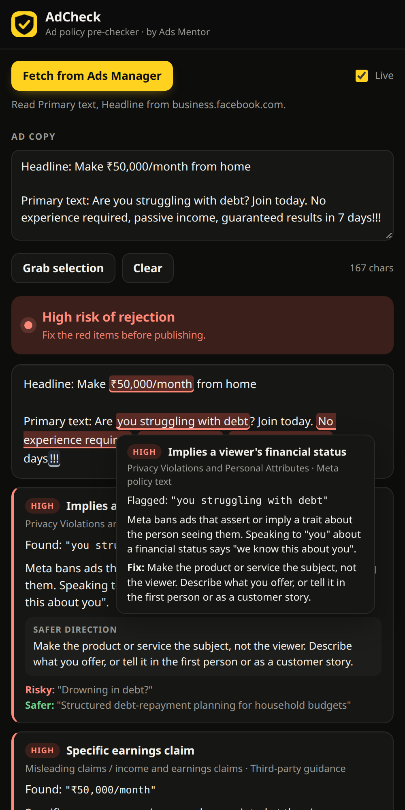
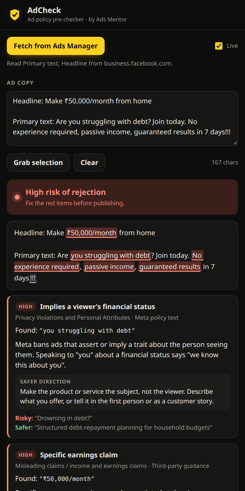
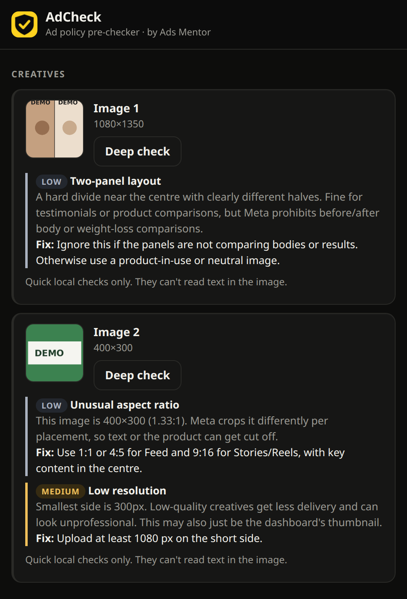
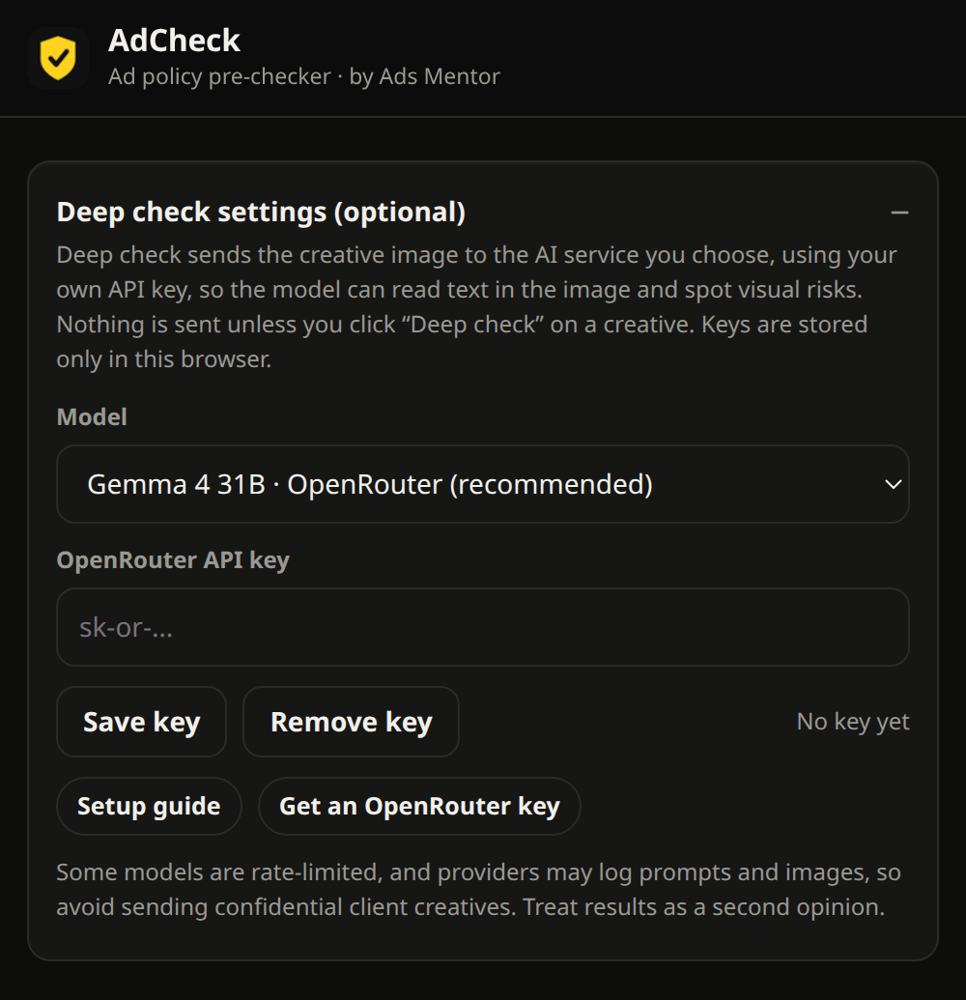

Catch Meta ad rejections before you publish.
AdCheck reads your ad inside Meta Ads Manager and shows which wording and creatives are likely to be rejected, why, and what to change. Hover any highlighted phrase to see the reason.

Rejections cost you days, and sometimes the account.
Meta doesn't publish a banned-word list. Ads fail on things like "Are you struggling with debt?", "guaranteed income", or a placement claim with no proof, and the rejection message rarely says which line caused it. AdCheck tells you before you hit publish.
A second pair of eyes inside Ads Manager.
Open the side panel on your ad and it reads the copy and creatives for you.
Reads your ad automatically
Pulls Primary text, Headline and Description, plus the creatives in the preview. A Live mode re-checks as you edit.
Explains every flag on hover
Highlighted phrases show the severity, the policy behind it, why it's a problem and how to fix it.
Suggests safer wording
Each finding comes with a fix and, where we have one, a risky-versus-safer example.
India-aware
Goes beyond Meta's rules to flag placement guarantees, salary figures and government-approval claims that ASCI and CCPA scrutinise.
Checks creatives too
Quick local checks for layout, resolution and aspect ratio. An optional Deep check reads the text inside an image using an AI model you choose.
Private by default
Copy is checked inside the panel. Nothing leaves your browser unless you click Deep check on a creative.
See it in action.
All screenshots use demo copy and demo images, not real client ads.



Three steps.
- Open your adGo to Meta Ads Manager and open the ad you're editing.
- Open AdCheckClick the icon or press
Alt+Shift+A. It reads the ad and checks it straight away. - Fix and recheckHover the highlights, apply the safer wording, and watch the verdict update.
25+ rules across Meta and Indian ad standards.
Built from Meta's published Advertising Standards, industry guidance and ASCI / CCPA summaries. Each finding is labelled with where the rule comes from.
- Personal attributes. "you" plus health, finances, age, religion or identity.
- Health and wellness. Timeframe promises, cure claims, body-shaming, before/after.
- Income claims. Specific earnings, passive income, "financial freedom".
- Guarantees. Guaranteed returns, clients, jobs or results.
- Financial products. Payday loans, crypto, "no credit check", assured returns.
- Education and coaching (India). Placement and salary claims, "100% placement", pay-after-placement fees.
- Endorsement claims. Government approval or certification without proof.
- Misleading style. Clickbait, shouting, unsubstantiated "No.1" claims.
Meta Ads today. More platforms next.
Meta Ads
Facebook and Instagram ads in Ads Manager: copy, creatives, hover explanations, India rules.
Google Ads
The same pre-check for Google Ads policies, so you catch disapprovals before they happen.
LinkedIn Ads
Pre-checks for LinkedIn Ads policies, built for B2B and recruitment advertisers.
Add it to Chrome in a minute.
It isn't on the Chrome Web Store yet, so you load it as an unpacked extension.
- Download the extension:
adcheck-extension-v0.5.0.zip, then unzip it. - Open
chrome://extensionsand turn on Developer mode (top right). - Click Load unpacked and choose the unzipped folder.
- Pin AdCheck from the puzzle-piece menu, open your ad in Ads Manager, and click the icon.
What AdCheck is, and isn't.
Built by people who run ads.
Kailas (KNR) Nath R
Creator and lead builder. iamknr.in
Team Ads Mentor
Live, cross-channel advertising training for India. adsmentor.in